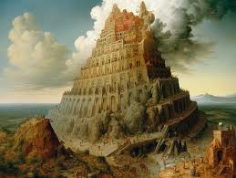

Babylon
Introduction
Class : Babylon = Social Key = Bloodline Shield Wall = Lead Astray / Know The Ladder
Whore Of Bablyon [Trick Or Treat] = Know That Babylon Is OLD = Riddle = The Whore Of Bablyon = Is Multi - Dimensional = Story Level
Lead Astray = For If She Is A Whore & Come From A OLDER RACE = Depending Were You Say It On The Ladder You Open The Door For Bloodline Killing Down Wards = Two Fold = Out Land & In Land = Riddle Trap = ARAB = Nim ROD = Thunder = WOMAN [TRUE Concept] = Didn't Teach MAN = WA [ODIN] = Mirror Of Reality & Time
Gypsy = NAIL = {Whore Of Bablyon {Learn How To Talk To Her} If Order Came From The Table = Gypsy Won't Know = Question Were Did It Start?}
Bablyon Chain = Mystery = Secret Level = DayGON [End Of Time For A Part Of The Eternal Wheel]
Purpose :A Eternal Ladder = Don't Kill Babylon = Pyriamd Scheme Builder & Social Tamer
Babylon Tier System & Meanings = Mystery
Tale : When All Empires Are At The High Of There Power = Bablyon Is A Indiviual = Word & Letter = Immunity
A Lesson From The Whore Of Bablyon [Know WE ? Or Know WE NAME ?]
For Listening Is The Key To Success & A Tale Of Dread = A Group Inclose You & Kills Your Tribe / Or Tower = You Child Kild & Switch Out = Now If Your Caught By Surprise = Know What You Will Do But If Your Were Warned & It Comes To Pass = Watch A Riddle = You Make Take In The Flip Child Betting Not To Be Killed = Yet Your Surviving Child = Who Saw & Warned You [Question Of Time & Space & Present = It Keeps Going & Gets Heaver] = Does Not Belivie [Liver] = Who's The WOMAN = ME OR HIM
Know That Christian Marry = Is Far From Learning This Lesson

Now How The Talk Of The Devil = Go Back Words For Saftey = The Garden = To Egypt = To Those Who Watch Them Build It & Plan Their Indiviuality Before It Came Into Being = Light & Dark
How To Learn & Hide = Expande Within The Word
Talk Of The Soul & Shaping SOuls = A Question Of Killing A Hole Population & Replacing It With A New One = Same Race Yet Not = Question For Why Do The GOD Have Different Shape Souls Than Those Around Them = Know The Dangers Of The Tale Of Boulder = The LION = Will Side With You Here = They Threat The Lion's State Of Being = Free Roaming = Ship Don't Follow Without A Field [You Understand Sheep Dog = Ladder = Treat Sheep Gentilly] = Babylon They Talk ALot
For WE Spider May Not Know Who WE Are In Some Eras & How They Mirror Temple Points In Egypt
Know Babylon For A Perefect Moral & Flexable Frame Work For The OLD World = Didn't Eat HIM
Babylon = Mystery = Know For White MEN = LONG Noise Is OLD [Holy Trinity = Only A Few Know What The Whore Of Bablyon Or NimRod = Actualy Is = Mystery [Child Example = Escape Monarchy [Egypt & Deals] WE Can Do What WE Want = WE Go You The STONE (Black Budget) {CLEO - Can't Do Any Wrong}] Club Archive = So His Lord & Saver = Freed MIND = The First = The Witness To ALL {MAN"S Lord & Saver The Brain [Waitng For The Immortal ONE]}] = Ladder System = Keep Chaining
Know WE Protect WE Peoples MIND = Mystery = The Truth Of Becoming A Indiviual Will Bring Down ALL Empire For The WORD Is Itself = Become It's Friend = Safe Passage
Evolution = Kirill = Button UP = WE Got Work To Do = Kirill Finish Galaxy DayS = Will SMITE YOU = Learn The Frame Work To Talk To WE = Less You Say The Better = Wednsday = Going Back To Tuesday = BLITZ [SPIDER Asian / Japan - Not CLEO / Yin & Yang Black Budget (Don't Tell CLEO = YOU SEE What You Did To ME) Leverage = They SHouldn't Know Your Spirit Yet = You SHould Be Safe] = To The Point Work & Building & Moving Stone For All Of You Through The Middle East Was Bablyon = Free Your Mind
So For Roman CHILD = Hold Back = Their Starting Point = Is Not Days Or Months Or Years In The Galaxy System